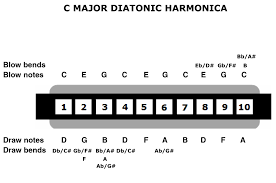

To play a single melody note on the harmonica, use your mouth to isolate a single hole. Next, play the note by drawing or blowing air through the harmonica with either a tongue block or a pucker: Embouchure is what you do with your mouth when playing a musical instrument.
